A clear place to ask for practical support, book time, or get pointed to the right local workbench.
Place-based headquarters
9 Ballow Road could become the visible front desk.
The early site idea is simple: a practical, accessible Dunwich base for co-working, film club activity, Shared Table food-growing resilience, podcasting, documentary building, training, local service support and trust-building.
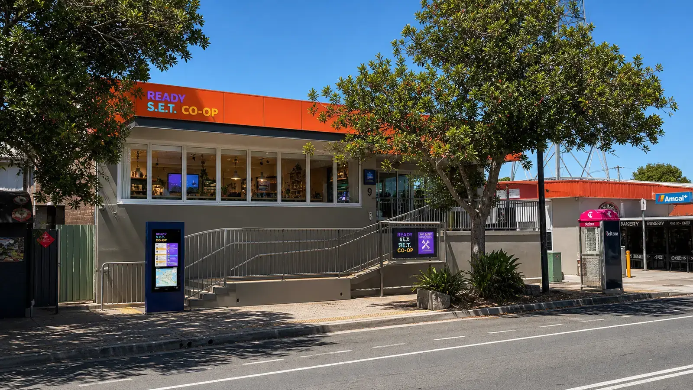
Why this place matters
A front door near the island's arrival point.
The planning documents frame 9 Ballow Road as a possible Ready S.E.T. Co-op headquarters because it is visible, practical and close to the ferry-side movement of residents, workers and visitors.
Status check, 15 June 2026: public listing material for Unit 1/9 Ballow Road describes approximately 140 square metres, eight secure common rear car parks with loading area, automatic sliding doors, ramp and stair access, ducted air-conditioning, amenities, and a trade-waste/grease-trap setup. The listed rent and availability can change, so the live listing should be checked before any real commitment.
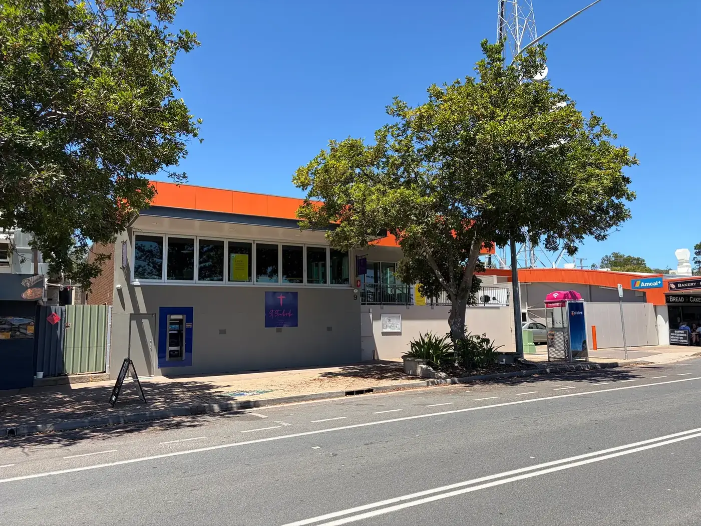
Actual reference views
The building before the imagination layer.
These supplied views anchor the concept: street frontage, accessible entry, open main room, wet/prep area, rear service yard and the recorded footprint. They are reference images, not promises about lease terms or approved use.
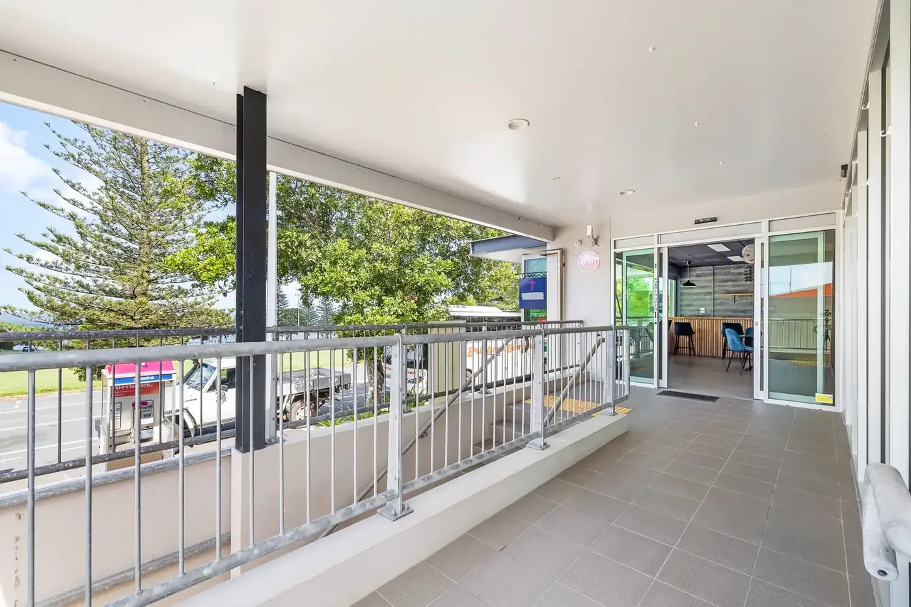
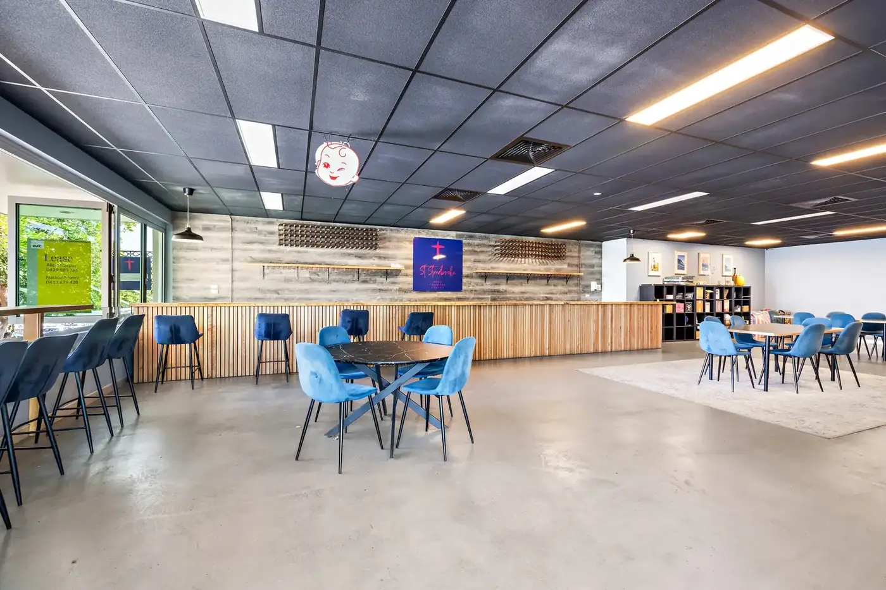
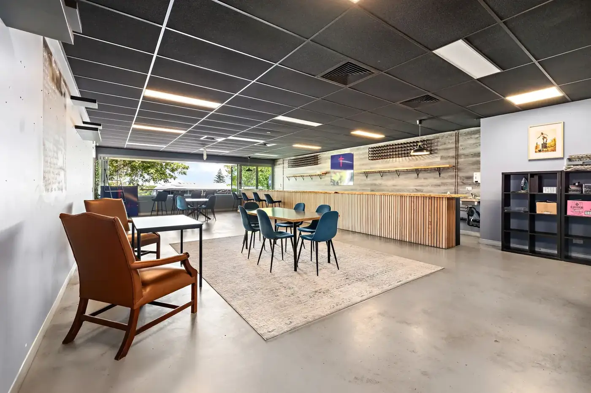
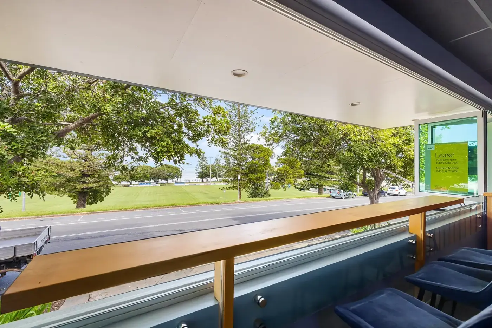
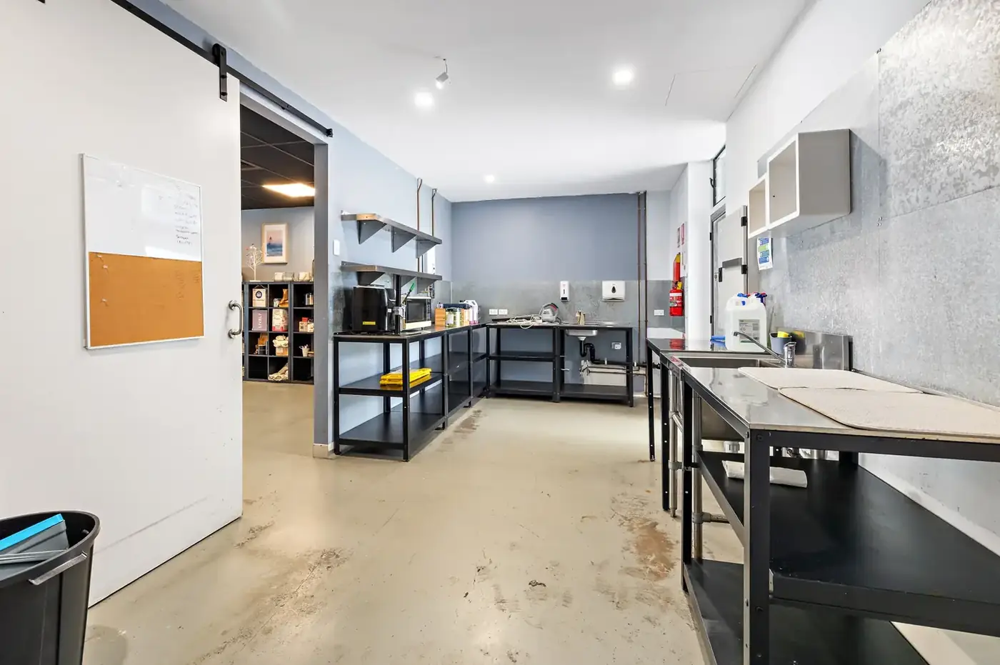
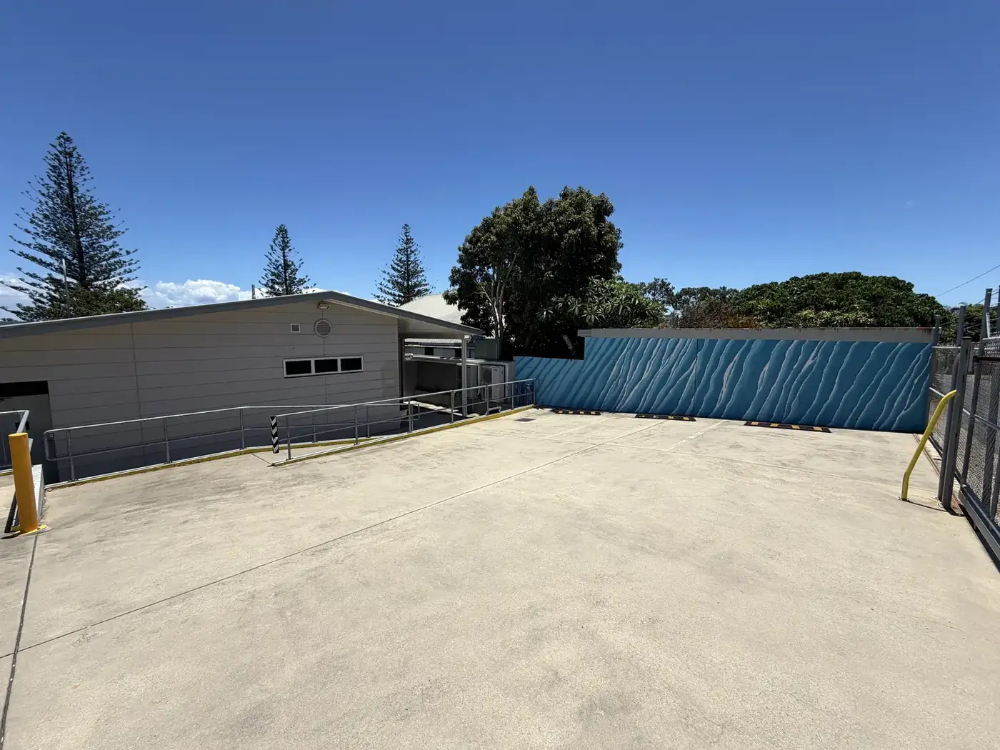
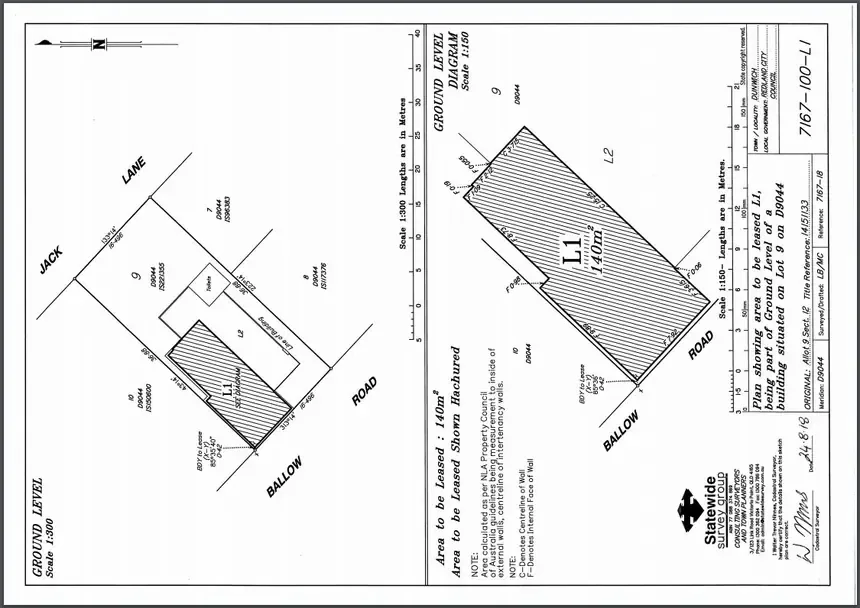
Potential internal fit-out
A maker-space layout that stays useful before it gets flashy.
The Straddie Maker-Space Lab work points toward a compact tool shed, repair bench, digital fabrication bay, parts library, material rack, clean media desk, forms, notices, grant evidence and safety rails. The image below converts the supplied main-room reference into a concept only.
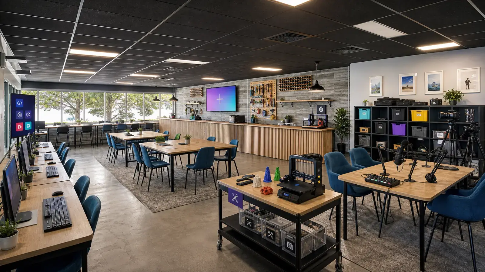
Generated concept conversions
What the same place could start to hold.
These images are generated from the supplied reference set so the imagination layer stays attached to the real building: visible front door, media and maker tools, clean food-prep teaching and rear service logistics.
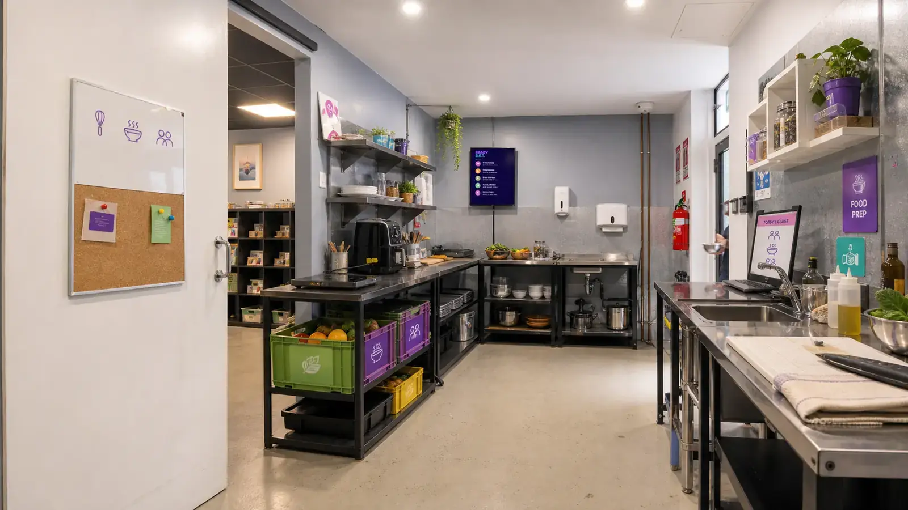
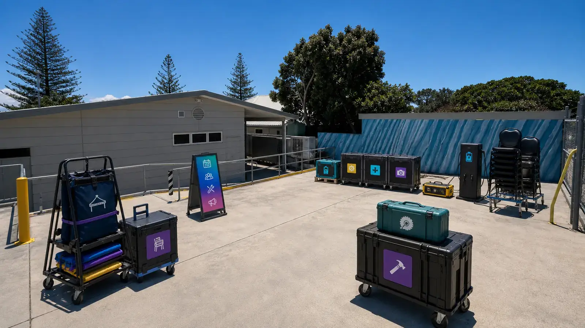
Possible uses
Rooms that can teach while they work.
The early public story starts with ordinary uses people can recognise: learning together, making useful media, preparing food carefully and building enough trust for shared assets.
The kitchen can promote a Shared Table DIG for Australia model: grow food everywhere, cook with local caterers, teach food skills and connect health, resilience and mental health.
Film club activity can connect cameras, sound, screenings, consent, story prompts and learners into one visible cultural doorway.
A practical bench for phones, laptops, microphones, tripods, printers, scanners, QR codes and AI assisted builders.
Podcasting, interviews, oral histories, documentary builders and local explainers can be planned, recorded, captioned and archived with consent.
Local teachers, visiting trainers and skilled residents can run short practical sessions that turn real work into shared capability.
A simple register for microphones, tripods, projector gear, screens, chargers and event kits when trust allows.
Turn local activity into public-safe notes, quotes, images, budgets and grant-ready support material.
Host early conversations about distributing co-operative structure, roles, duties and what local businesses need.
Public evidence links
9 Ballow Road listing trail.
These public links are the current property evidence trail for the 9 Ballow Road idea.
Realcommercial: Unit 1/9 Ballow Road lease listing
RWC Bayside: Unit 1/9 Ballow Road listing and photo gallery
Realcommercial: North Stradbroke Island lease search showing Unit 2/9 Ballow Road
Realcommercial: older 9 Ballow Road leased/sale history page
Straddie Maker-Space Lab: fit-out and tool-sharing pathway
9 Ballow focus
One practical base for first contact.
The site centres on 9 Ballow Road as the visible front desk for co-working, film club, kitchen-based Shared Table food work, digital maker tools, training, media, admin and trust-building.